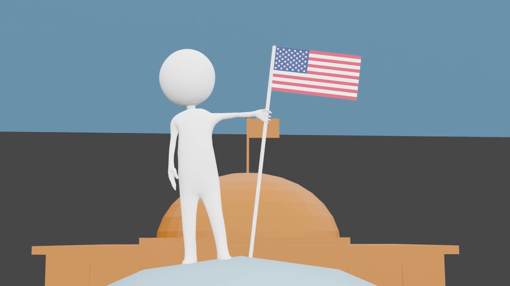

Every semester, the U.S. State Department recruits students from universities all over the United States to help them with various projects through a program called the Diplomacy Lab. As a member of the Carolina International Relations Association, I, alongside my fellow member Sunhee, applied and was accepted for a Diplomacy Lab project. Through this project we created informational videos that the State Department uses to teach their embassy employees about topics such as SWOT Analysis and SMART Goals. Unfortunately, some of the information in these videos are sensitive so I cannot share them publicly.
We used Blender to create 3D animations that showcase the different topics. I had used Blender before so I, alongside leading the class, taught the animators how to use the program and guided them through their troubles.